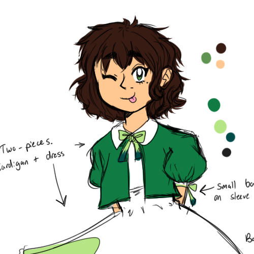
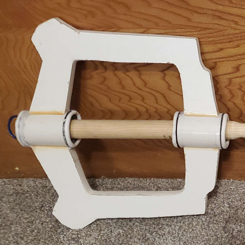
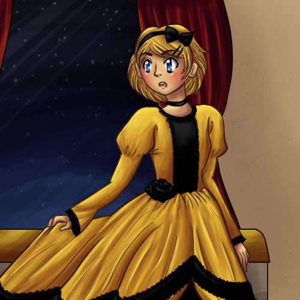
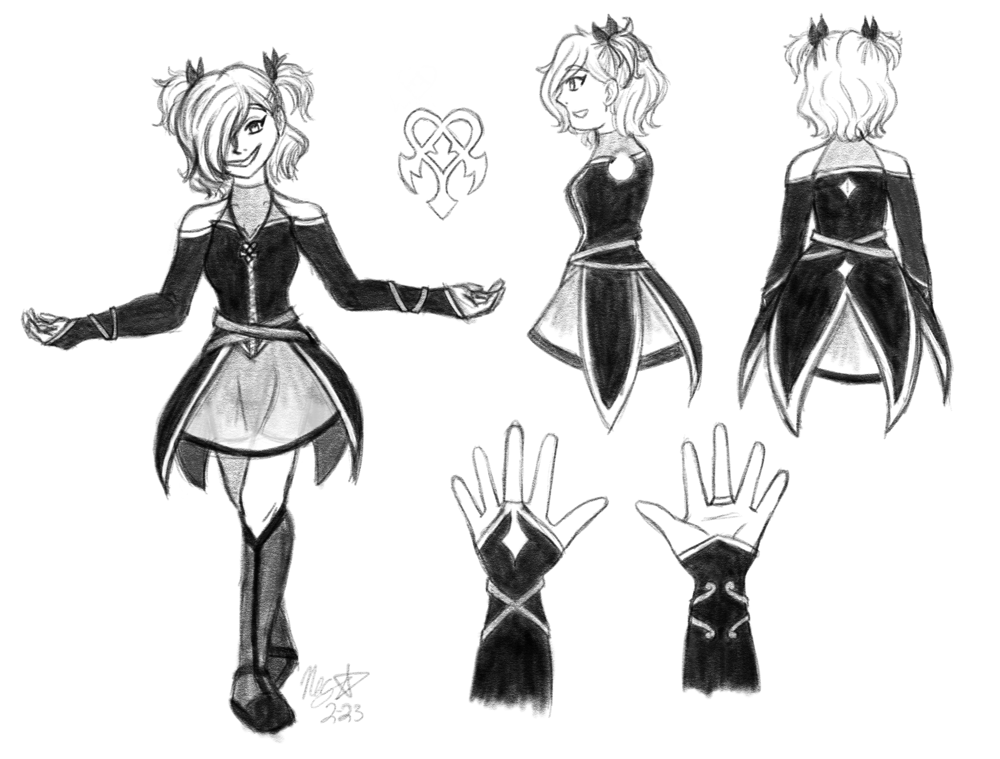
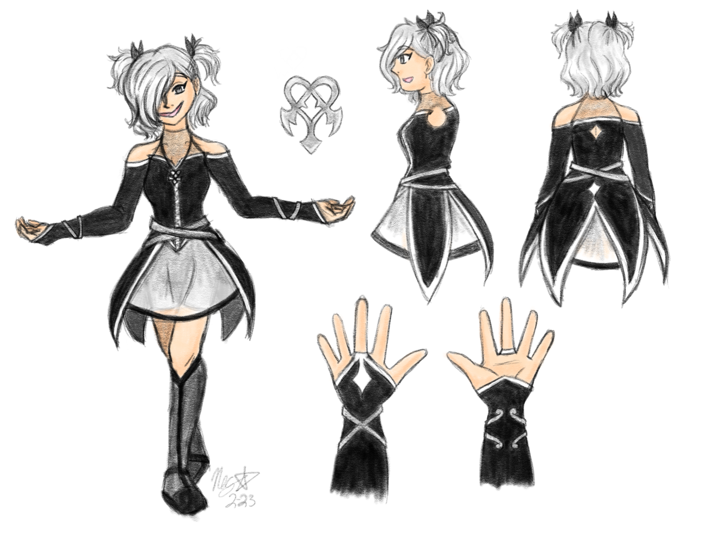
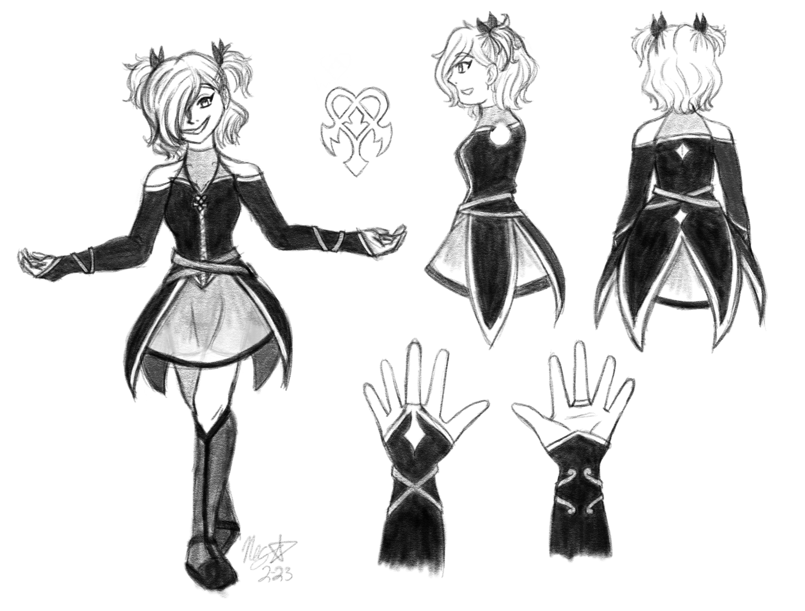
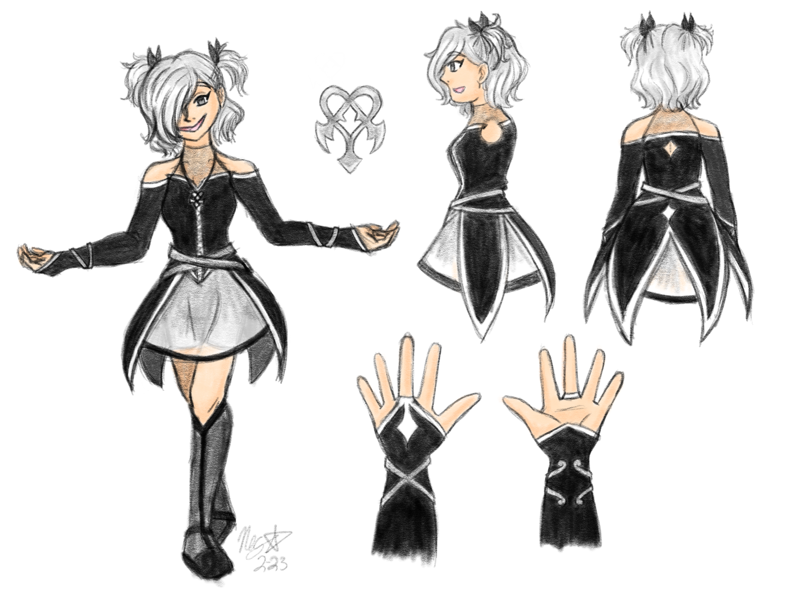
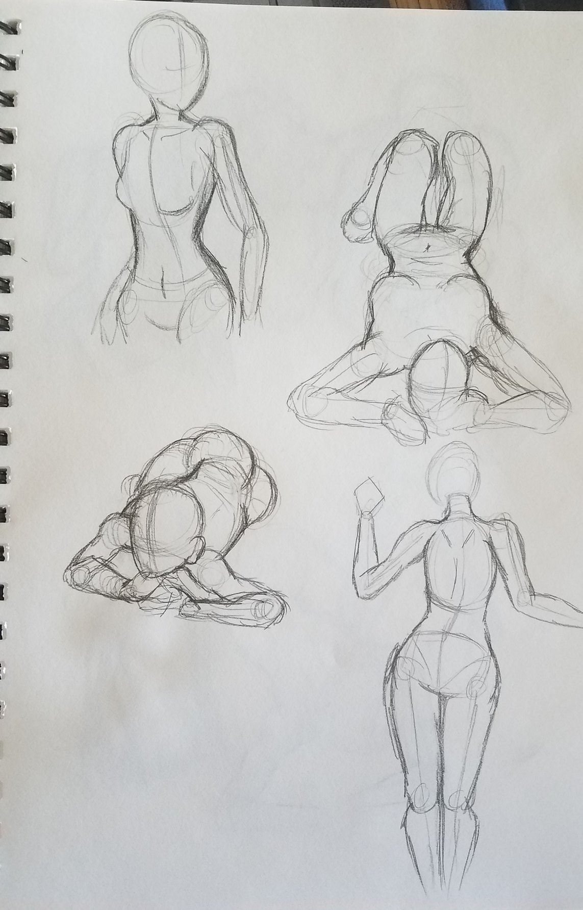
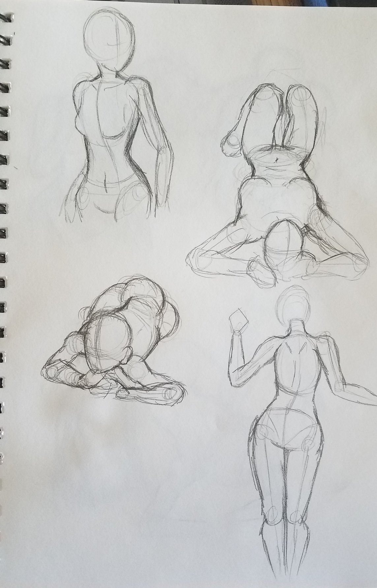

A portfolio is curated. The person making the portfolio puts their best foot forward, only selecting their finest works that they feel are appropriate for the context that the portfolio will be viewed in. But with such a curated, tidy selection of work, the process is often lost. Not everything that a creator considers “portfolio-worthy” reflects the entirety of who an artist is as a person.
This is what The Rest of the Portfolio seeks to represent. This project is a web-based selection of works in progress, unfinished works, practice sketches, and derivative works that would not be featured on a traditional portfolio. By putting on the headphones next to each individual piece that you find in this gallery, you will hear some of the thoughts associated with that piece, rising up above a sea of thoughts about the rest of my work.
A portfolio is curated. The person making the portfolio puts their best foot forward, only selecting their finest works that they feel are appropriate for the context that the portfolio will be viewed in. But with such a curated, tidy selection of work, the process is often lost. Not everything that a creator considers “portfolio-worthy” reflects the entirety of who an artist is as a person.
This is what The Rest of the Portfolio seeks to represent. This project is a web-based selection of works in progress, unfinished works, practice sketches, and derivative works that would not be featured on a traditional portfolio. By putting on the headphones next to each individual piece that you find in this gallery, you will hear some of the thoughts associated with that piece, rising up above a sea of thoughts about the rest of my work.
Alt text is available for those who need it, but I would encourage those who do not need it to experience this piece with alt text off and background voices on for the full effect.
Background image by rawpixel.com on Freepik
April 2020 (age 21)

Can I even come up with 20 art styles to draw in?
Do the Eva anime and Rebuilds count as two different styles?
...Do fmab and fma03 count as different styles?
Dang, I forgot about this one. I wish I’d finished it.
Should I go back and finish it or just start over? It’s so old at this point...
Maybe I can come up with more different styles this time...
February 2023 (Age 23)
 



Alt text
June 2021 (Age 22)

This should be a fun challenge! Putting my own twist on this design.
Why does it look like one piece? You’re getting a cardigan.
Girl, what are your SHOES???
I diagnose you with floofy hair.
Haha, now if only I could bring this kind of energy for characters that aren’t for existing properties.
January 2017 (age 17)


Yeesh. Did I take this too literally?
Does this even count for the prompt?
I am pretty happy with the figurative version, even if it’s not my usual style...
The photo would’ve been way more at home in MA+P, wouldn’t it...
Man, I didn’t even bother cleaning up the background on the photo or anything. Even if I were to take this same photo again with the same concept I’d do it completely differently...
Yeah, these are way too literal. RISD was probably way too traditionally artsy for me.
I am taking this photo to my grave. I mean, I guess I’m not, if I’m gonna use it for thesis. But otherwise, I would.
Left: July 2018 (age 19)
Right: October 2016 (age 17)


I bet if I redrew this now, I could make the pose way more dynamic.
Yeah, the old one has Ed just kind of hovering there. There’s more movement here.
Though I think Winry might’ve actually had more lean in the old one. She should probably be leaning back more...oh well.
Yesss copic markers come through!!!
January 2017 (age 17)


I need to have studies if I’m gonna apply to art schools. I don’t have those. I don’t do those. Maybe I can turn into an actual artist real quick?
These don’t look right. Are these right? I mean, they’re better than my usual stuff...
This is painful to look at.
I mean, having references is good, but these were definitely not done because I “wanted” to do them...
These are not “studies.” These are sketches you threw together to seem like a “legit” artist.
February 2019 (age 19)
 



I need to get better at anatomy. How do I even start?
I need to be comfortable just scribbling in my sketchbook. Not everything needs to be finished...
...Dang it, I finished that Sayori.
These don’t look right.
Wow, this one is bad. Why do you have such massive bazongas?
I am so bad at anatomy, and for what?
Left: January 2018 (age 18)
Right: October 2016 (age 17)


Oh, hey, an old Inktober I liked the concept for. Guess who’s getting a glow up?
HIS RIGHT FOREARM IS SO LONG COMPARED TO HIS LEFT HELP
Yesss, that upgrade to copic markers feels good, feels organic...
The wings are SO much better. References are a blessing.
April 2022 (age 23)

(AFFECTIONATE UGLY CRYING) MY SON...
Your design has changed SO much. It took a lot to get him to this point.
(laughing) No wonder I turned out questioning my gender, when he used to be the “girl disguised as boy” trope.
September 2022 (age 23)

How the hell do you design weapons?
I am at peak brainrot, combining all my favorite things.
The Mother 3 one just kinda looks like Shooting Star with a different coat of paint, but, ehh...
Hey, these actually didn’t come out bad.
I am once again putting all of my talents into a derivative work that I can’t actually monetize or use to further whatever career I end up having.
September 2022 (age 23)

(screaming)
What am I doing. I don’t know what I’m doing—
FUCK. I FUCKED UP THE PAINT. SHIT.
I am finishing my degree in MA+P. I could be doing anything with my life. Instead, I’m building an oversized key to pretend to be a video game protagonist. Real intellectual stuff.
Oh shit, this is heavier than I thought it was gonna be. I’m gonna be so buff by the time the con rolls around and I have to carry this thing all day!
March-April 2023 (age 24)

Okay, so my themes are remix or something, media that make up who I am, trying to figure out who I am in the midst of all of this...I threw in a lot of character reference sheets too, so I should probably make a character. That’s something I like to do too, so that’ll ensure it’s something fun and fulfilling. I could maybe also use them as a sona...
You’re going to be a doll trying to figure out their identity when they’ve been patched together from lots of other parts.
Dammit, that’s just Rei and Xion. ...No, wait. That works, actually.
Fuck. I’m so bad at coming up with outfits.
DJ, I’m doing this character creator for thesis. It’s relevant, I promise.
July 2019 (age 20)


Tracing is a good way to learn. Tracing is a good way to learn. Tracing is a good way to learn. I am doing this for learning purposes. I am not cheating. Tracing is a good way to learn.
Fuck, you can totally see my boobs.
I love my boyfriend...
I have never drawn better clothing folds in my life, nor will I ever draw better clothing folds again.
Left: May 2010 (age 11)
Right: January 2017 (age 17)
Hahaaa, I can’t believe I got away with submitting fanart to Champlain.
Hahahahaha...my old art...
Her hands are so TINY in the old one, and her head is so LARGE...
The new one isn’t perfect, but it’s leagues ahead of where I was in fifth grade. I mean, as it should be.
Maybe I can redraw this again and it’ll be even better...
Haha...I submitted fanart to Champlain. Wow.
November 2016 (age 17)

Before/at time
I can kind of see how this would’ve been what the professors were looking for? What with meaning and signifiers and stuff.
If I were to do this again, I’d probably use a picture of my actual self instead of a stock photo...
The chalk writing is kinda cheesy in hindsight, but it does the job.